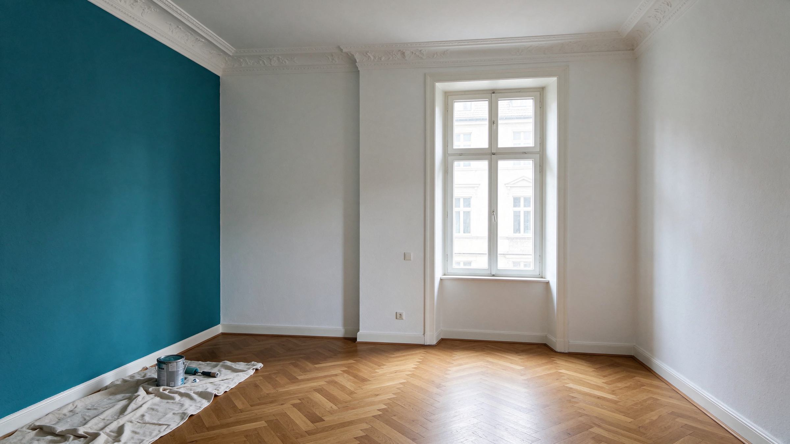
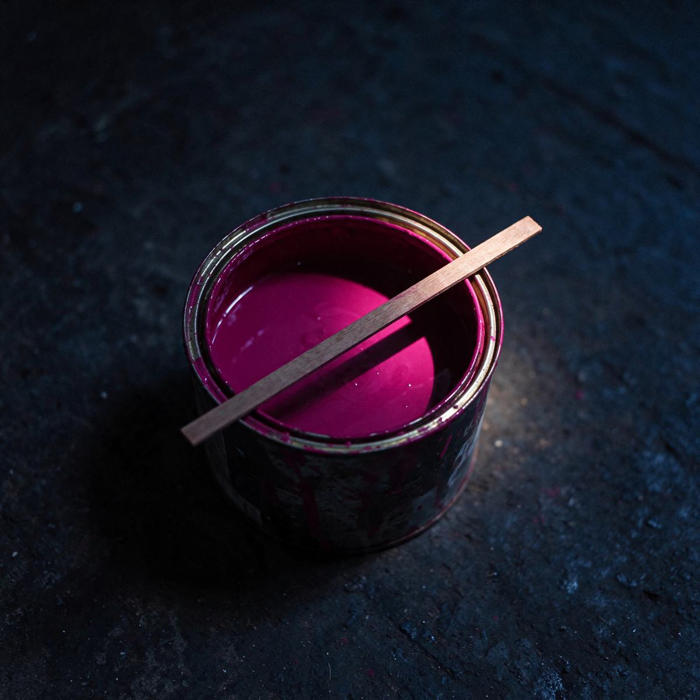
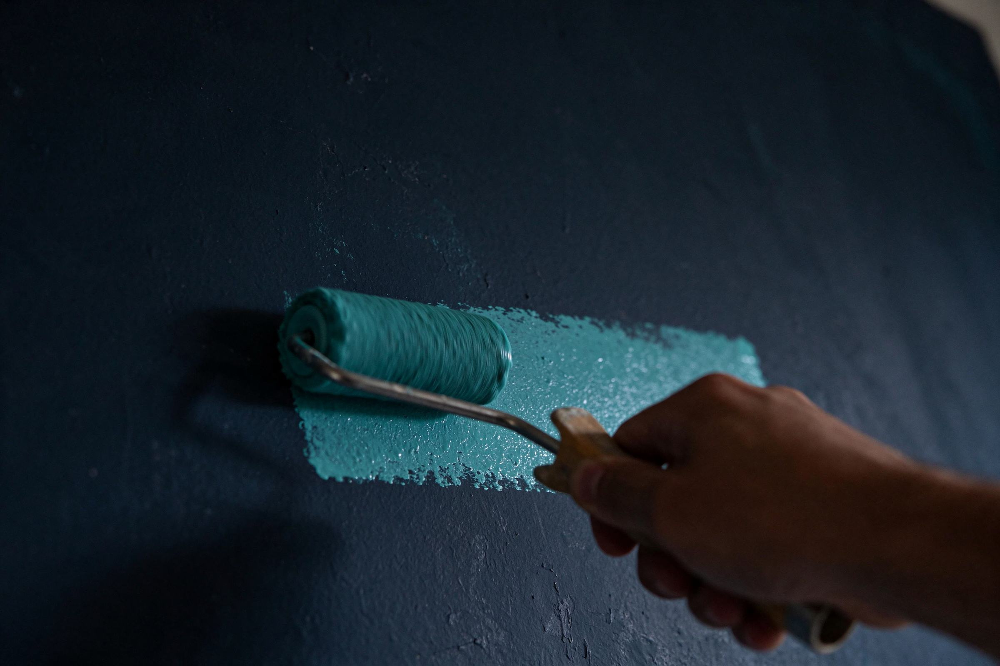

Maler Berg
Malermeister für Köln, seit 1996.
Gemeinsam bringen wir Farbe ins Leben.
1996 hat Ralf Berg den Betrieb allein gegründet. Heute arbeiten ein Malermeister und sechs Fachkräfte von Zollstock aus für Privatkunden, Hausverwaltungen und Unternehmen in ganz Köln. Wir streichen, lackieren, tapezieren und spachteln, verlegen Böden und übernehmen auf Wunsch die komplette Renovierung mit allen anderen Gewerken.
Mitglied der Handwerkskammer zu Köln, der Maler- und Lackierer-Innung Köln und von BNI Rheinland.
Messen Sie selbst.
Unser Farbmessgerät liest jeden Ton direkt von der Wand, auch Farben, die es in keinem Fächer mehr gibt. Ziehen Sie den Ring über das Bild und nehmen Sie Ihren Ton mit in die Anfrage.

So läuft Ihr Auftrag

Am ersten Termin kommen wir zu Ihnen, sehen uns Räume, Untergründe und Wünsche an, nehmen Maß und lesen den Wunschton mit dem Brillux MF 100 direkt an der Wand ab.

Ein, zwei Werktage später ist Ihre Farbe gemischt und bei uns. Sie bekommen ein klares Angebot und einen festen Termin.

Bis zur Übergabe decken wir ab, bereiten vor und streichen, mit festen Ansprechpartnern auf der Baustelle. Dann räumen wir auf, gehen alles mit Ihnen durch und hinterlassen den Raum besenrein.
Mehr als Streichen
- Wisch- und SpachteltechnikLasuren wie ein Schleier, Spachtelschläge, die sichtbar bleiben dürfen.
- Mobile FarbmessungJeder Ton wird an der Wand eingelesen und in 1–2 Werktagen gemischt geliefert.
- BodenbeschichtungGarage, Keller, Lager und Balkon, dazu alle elastischen Beläge.
- Graffiti-EntfernungSchonend mit Reinigern oder Strahlgut, auf Wunsch mit Schutzanstrich.
- SchimmelsanierungGeprüfte Sachkunde: Landesinnungsverband Nordrhein 2007, TÜV Rheinland 2013.


Gestrichen haben wir für
die Dombauhütte Köln, die Kölner Haie, Gaffel, Früh am Dom, Thomas Sabo, GAG Immobilien, das Aqualand Köln, das Deutsche Rote Kreuz und viele Haushalte in Köln.
9,4 bei trustlocal, 36 Bewertungen, Top Score 2024250 sehr gute Kundenbewertungen
Alle Leistungen
Malerarbeiten
- Anstriche innen
- Wände, Decken, Treppenhäuser
- innen
- Lackierarbeiten
- Türen, Fenster, Heizkörper
- innen und außen
- Tapezierarbeiten
- Raufaser, Vlies, Design
- innen
- Fassadenarbeiten
- Anstrich und Ausbesserung
- außen
- Wisch- und Spachteltechnik
- Caparol Antik-Lasur, Arte-Lasur
- innen
Böden
- Elastische Beläge
- CV, PVC, Linoleum, Kautschuk
- verlegen
- Teppich, Parkett, Laminat
- alle Räume
- verlegen
- Beschichtungen
- Garage, Keller, Lager, Balkon
- beschichten
Sanierung und Schutz
- Schimmelsanierung
- mit Feuchtemessung und Protokoll
- geprüft
- Graffiti-Entfernung
- mit Schutzanstrich
- außen
- Mobile Farbmessung
- Brillux MF 100
- vor Ort
- Logos und Schriftzüge
- mit Negativfolie
- innen
Rundum-Service
- Wohnungsrenovierung
- komplett aus einer Hand
- mit Partnern
- Trockenbau
- Wände, Decken, Verkleidungen
- innen
- Koordination
- Sanitär, Heizung, Fliesen, Elektro, Gerüst
- mit Partnern
Für ein Angebot zur Schimmelsanierung erheben wir eine Gebühr, die bei Auftrag angerechnet wird.
Sprechen wir über Ihre Wände.
Maler Berg GmbH · Ralf Berg
Breniger Straße 5, 50969 Köln
- Telefon
- 0221 – 36 14 51
- Fax
- 0221 – 93 62 51 2
- info@maler-berg.de